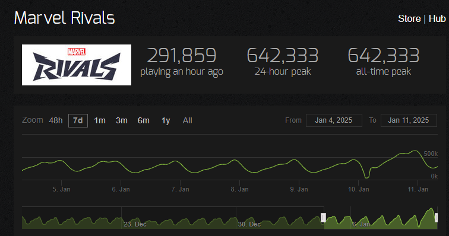

A leaker known as X0XLEAK posted on X that 5 new heroes were found in the game files. The heroes are:
This puts the number of unreleased heroes found in the games files at about 15, which would expand the games roster to 50 heroes. It's worth noting that Overwatch has a 42 hero roster and has been released for nearly 9 years.
Marvel Rivals might not surpass Overwatch in releasing heroes - as there’s no way to know when these heroes will debut - but it does highlight the strong start Marvel Rivals has made.
Previously leaked characters include:
This is a pretty substantial roster considering we're also expecting the second half of the Fantastic Four to be released later this season. RivalLeaks tweeted that Ultron will be releasing "sooner then u might think".
The amount of momentum this game has gotten since release is staggering. As of yesterday on Season 1's release, the game hit the highest player count in the games history at 642,333 concurrent players and has achieved 20 million unique players combined.
I've been curious whether Marvel Rivals would be able to keep up its momentum - but considering the numerous heroes tucked away in the game files, it's starting to look like they'll be able to keep players engaged for quite some time.
I'll keep updating this page if any new heroes leak, so keep checking back for more updates!